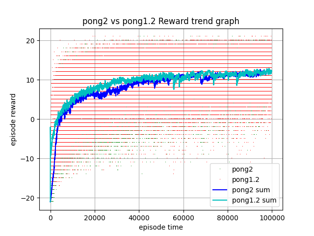

neural_network_in_python.pdf <<
Previous Next >> Markov
參考範例
參考範例
https://github.com/mdecourse/4072pj1/blob/master/40723150/example/pong2.py
GPU運算
with cp.cuda.Device(0):#用GPU0做計算
if resume:
model = pickle.load(open('save.p', 'rb'))
'''以 Binary 的方式讀取 save.p'''
print('resuming')
else:
model = {}
model['W1'] = np.random.randn(D,H) / np.sqrt(D)
'''W1檢測遊戲場景'''
model['W2'] = np.random.randn(H,A) / np.sqrt(H)
'''W2決定擊錘向上或向下移動'''
grad_buffer = { k : np.zeros_like(v) for k, v in model.items() }
# update buffers that add up gradients over a batch
rmsprop_cache = { k : np.zeros_like(v) for k, v in model.items() }
# rmsprop memory
python open()[來源：w3schools]
sigmoid
def sigmoid(x):
return 1.0 / (1.0 + np.exp(-x))
$$\sigma(x) = \frac{1}{1+e^{-x}}$$
softmax
def softmax(x):
probs = np.exp(x - np.max(x, axis=1, keepdims=True))
probs /= np.sum(probs, axis=1, keepdims=True)
return probs
$$\sigma(\overrightarrow{z})_i = \frac{e^{z_i}}{\sum^K_{j=1}e^{z_j}}$$
[來源：softmax資料]
prepro
def prepro(I):
""" prepro 210x160x3 uint8 frame into 6400 (80x80) 1D float vector """
I = I[35:195] # 裁掉頂部的計分和底部空白，剩下160x160
I = I[::2,::2,0] # 從160x160縮減到80x80，取出第一個顏色channel
I[I == 144] = 0 # 將背景顏色變成黑色
I[I == 109] = 0 # 將背景顏色變成黑色
I[I != 0] = 1 # 球和擊錘變成白色
return I.astype(np.float).ravel()
discount rewards
def discount_rewards(r):
""" take 1D float array of rewards and compute discounted reward """
discounted_r = np.zeros_like(r) #和r矩陣相同維度大小的0矩陣
running_add = 0
for t in reversed(range(0, r.size)):
if r[t] != 0: running_add = 0
# 當球到邊界的時候重設總和
running_add = running_add * gamma + r[t]
discounted_r[t] = running_add
'''加入第t項折扣'''
return discounted_r
policy forward
def policy_forward(x):
if(len(x.shape)==1):
x = x[np.newaxis,...]
h = x.dot(model['W1'])
h[h<0] = 0 # ReLU nonlinearity
logp = h.dot(model['W2'])
#p = sigmoid(logp)
p = softmax(logp)
return p, h
# return probability of taking action 2, and hidden state
# h 是球在環境上的狀態，p 是移動的決策
policy backward
def policy_backward(eph, epdlogp):
""" backward pass. (eph is array of intermediate hidden states) """
dW2 = eph.T.dot(epdlogp)
dh = epdlogp.dot(model['W2'].T)
dh[eph <= 0] = 0 # backpro prelu
t = time.time()
# problem: https://github.com/chainer/chainer/issues/8582
if(be == cp): #將參數複製到GPU或CPU
dh_gpu = cuda.to_gpu(dh, device=0)
epx_gpu = cuda.to_gpu(epx.T, device=0)
dW1 = cuda.to_cpu( epx_gpu.dot(dh_gpu) )
# 將GPU的矩陣複製到CPU
else:
dW1 = epx.T.dot(dh)
print((time.time()-t0)*1000, ' ms, @final bprop')
return {'W1':dW1, 'W2':dW2}
訓練過程
while True:
t0 = time.time()
#render = True
if render:
t = time.time()
env.render()# 顯示訓練中狀況(影像)
print((time.time()-t)*1000, ' ms, @rendering')
# 計算每幀時間差
t = time.time()
# preprocess the observation, set input to network to be difference image
cur_x = prepro(observation)
x = cur_x - prev_x if prev_x is not None else np.zeros(D)
prev_x = cur_x
# forward the policy network and sample an action from the returned probability
t = time.time()
aprob, h = policy_forward(x)
# roll the dice, in the softmax loss
u = np.random.uniform() # 隨機取出一個數(擲骰子)
aprob_cum = np.cumsum(aprob) # 三個動作的機率
a = np.where(u <= aprob_cum)[0][0]
'''
骰子的點數落在哪個行為的區間，舉例:
u = 0.5826051448555892
aprob_cum = [0.99999548 0.99999872 1. ]
u < aprob_cum[0]，則執行aprob_cum[0]的行為
'''
action = a+2
#print(u, a, aprob_cum)
# record various intermediates (needed later for backprop)
t = time.time()
xs.append(x) # observation
hs.append(h) # hidden state
#softmax loss gradient
dlogsoftmax = aprob.copy()
dlogsoftmax[0,a] -= 1 #-discounted reward
dlogps.append(dlogsoftmax)
# step the environment and get new measurements
t = time.time()
observation, reward, done, info = env.step(action)
reward_sum += reward
drs.append(reward) # record reward (has to be done after we call step() to get reward for previous action)
if done: # an episode finished
episode_number += 1
t = time.time()
# stack together all inputs, hidden states, action gradients, and rewards for this episode
epx = np.vstack(xs)
eph = np.vstack(hs)
epdlogp = np.vstack(dlogps)
epr = np.vstack(drs)
xs,hs,dlogps,drs = [],[],[],[] # reset array memory
print(epdlogp.shape)
# compute the discounted reward backwards through time
discounted_epr = discount_rewards(epr)
# standardize the rewards to be unit normal (helps control the gradient estimator variance)
discounted_epr -= np.mean(discounted_epr)
discounted_epr /= np.std(discounted_epr)
epdlogp *= discounted_epr # modulate the gradient with advantage (PG magic happens right here.)
grad = policy_backward(eph, epdlogp)
for k in model: grad_buffer[k] += grad[k] # accumulate grad over batch
# perform rmsprop parameter update every batch_size episodes
if episode_number % update_freq == 0: #update_freq used to be batch_size
for k,v in model.items():
g = grad_buffer[k] # gradient
rmsprop_cache[k] = decay_rate * rmsprop_cache[k] + (1 - decay_rate) * g**2
model[k] -= learning_rate * g / (np.sqrt(rmsprop_cache[k]) + 1e-5)
grad_buffer[k] = np.zeros_like(v) # reset batch gradient buffer
# boring book-keeping
running_reward = reward_sum if running_reward is None else running_reward * 0.99 + reward_sum * 0.01
print('resetting env. episode reward total was %f. running mean: %f' % (reward_sum, running_reward))
if episode_number % 100 == 0: pickle.dump(model, open('save.p', 'wb'))
reward_sum = 0
observation = env.reset() # reset env
prev_x = None
print((time.time()-t)*1000, ' ms, @backprop')
outstring =""
if reward != 0: # Pong has either +1 or -1 reward exactly when game ends.
if reward == -1:
outstring = ''
else:
outstring = '!!!!!!!'
print ('ep '+ str(episode_number) + ': game finished, reward:' +str(reward)+ outstring )
訓練結果
點是每局的獎勵總和，曲線是累積獎勵平均值。橫軸：訓練局數；縱軸獎勵分數。紅點是pong1.2，綠點是pong2。(圖1.)pong2的activation function為softmax，pong1.2則是sigmoid。

圖1. pong2 v.s. pong1.2
[pong2_vs_pong1.2.pdf]
neural_network_in_python.pdf <<
Previous Next >> Markov